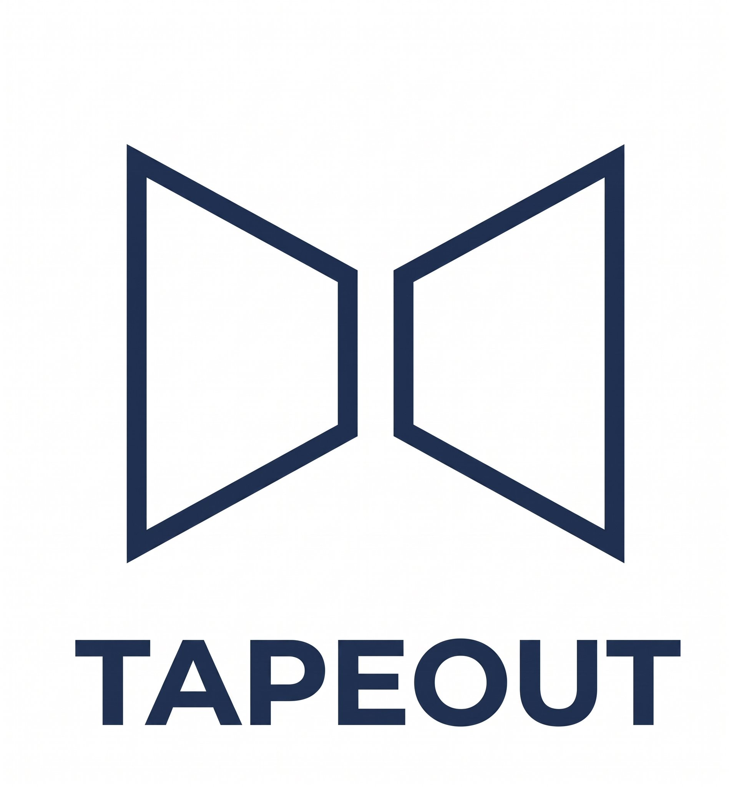

Independent Builder / Blonskr Fans
Blonskr
Fans
记录 @Blonskr 公开发布的协议、产品与技术实验。这里关注作品本身：它解决什么问题，如何实现，又把边界推到了哪里，为粉丝提供项目概要指导说明。
Selected Work
作品

WORK 01 · 2026
TapeOut
把 NAND、LATCH、电路网表、NFT 与 Proof of Design 连接起来的链上硬件制造协议。
协议链上电路PoD
浏览 TapeOut
TapeHub
WORK 02 · 2026
TapeHub
把项目创建、Mint、挖矿产出与自动上市串进同一套 Proof of Design 经济系统的发射平台。
LaunchpadMiningBEM
浏览 TapeHub
TapeKit
WORK 03 · 2026
TapeKit
从多家公链节点直接读取、逐字节验证链上网站的开源 DeWEB 浏览器内核。
DeWEBBrowser KernelOpen Source
浏览 TapeKit
TapeSend
WORK 04 · 2026
TapeSend
以电路容器为身份、无需跨链桥和中心化消息服务器的多链端到端加密通信层。
Encrypted MessagingMultichainDeWEB
浏览 TapeSend
这是一个独立的非官方作品档案，按产品分别整理公开信息、工作原理、应用案例与风险边界。